Using German
Usage page, as of 22 November 2026. How to open and use the fourteen tools of the subject, what the feedback means and what the work state keeps. The pictures are screenshots of the app; the exercises themselves are in German.
The window
German is a subject of the School app: open it in the Applications menu
with School or with
Alt+A and choose the tab  German at the top. There are no dialog windows; everything is in this tab.
German at the top. There are no dialog windows; everything is in this tab.
On the left is the vertical rail, next to it the card of the open tool with a short explanation and the settings. On the right is the work area of the tool, at the very bottom the status line. Where a practice text stands next to a form (analysis, exam), a divider separates them that can be dragged; initially the text gets as much width as its longest line needs, as long as enough room remains on the right. The lines of the text are not wrapped, so that the line numbers stay right.
The rail
The buttons carry only icons; what they do is in the tooltip.
| Icon | Tooltip | What happens |
|---|---|---|
| Understand | Explains an essay type page by page and leads into the exercises (below). | |
 | Argument workshop | Practise arguments in four levels (below). |
 | Material workshop | Evaluate materials and use them with a reference (below). |
| Outline | Outline an essay and check it. | |
| Analysis of argumentation | Analyse a practice text. | |
 | Interpretation and comparison | Interpret a literary text or compare two (below). |
 | Form checker | Check a text of one's own. |
 | Practice: language and communication | Practise connectives, operators, stylistic devices and communication. |
 | Practise literature | Poetry, prose, drama, conversation, characters and literary periods (below). |
 | Error hunt | Find built-in errors against the clock. |
 | Error trainer | Repeat one's own errors. |
 | Exam | Write an exam to a schedule. |
 | Look up | Stylistic devices, terms, literary periods, authors and characters, types of argument, pseudo-arguments and essay types (below). |
 | Progress | Errors per rule week by week (below). |
 | Help for the subject German | Opens this page in the documentation app. |
Understand
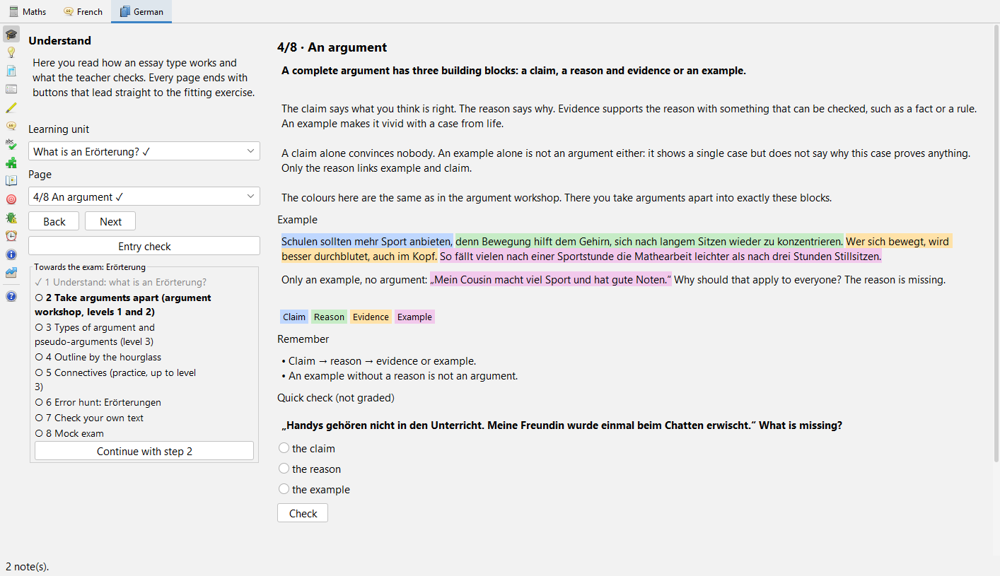
The first card of the rail explains before you practise. The unit What is an Erörterung? has eight pages: why one argues, the types (linear, dialectical, free, text-based), the structure, the complete argument, types of argument and pseudo-arguments, ordering by hourglass and ping-pong, linking with transitions and connectives, and finally a whole essay. Every page has a core sentence, a short explanation, an example, at most three reminders and a question that only gives feedback – nothing is graded. Then comes the summary “What the teacher checks” as a list to tick (it is not saved) and the button Continue on the learning path. The model essay stays German, as the exam does.
Below every page there are buttons to go deeper. A click opens the fitting tool and sets it up, for example the argument workshop at level 2 or the error hunt on a text with the focus “new argument in the conclusion”; the status line says what was set. Whatever a tool cannot take over is named in the status line as well. A running exam is never changed: then it says “The exam is running; preset not applied.”
After a jump the bar Back to: … · page n stands above the work area. It leads back to exactly the page you came from; the cross closes it, and choosing another card yourself makes it unnecessary. The other way round, the argument workshop, outline, error hunt, practice, look-up, exam and checker carry the button Explanation below their title, which opens the fitting page.
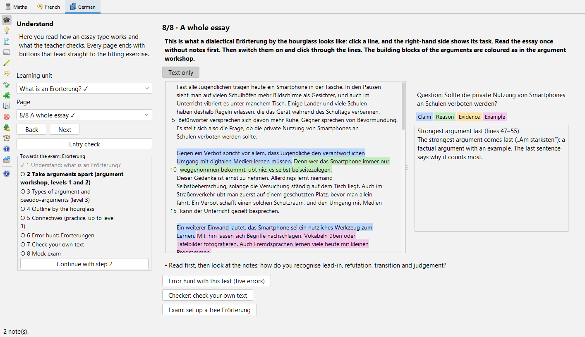
Page 8 shows an annotated model essay: a dialectical Erörterung by the hourglass on whether the private use of smartphones at school should be banned. At first it stands without help; With notes colours the building blocks of the arguments, and a click on a line shows on the right what task it has (lead-in, question, counter-argument, refutation, transition, own argument, strongest argument, judgement, outlook). Error hunt with this text opens a version of the same essay with five built-in errors.
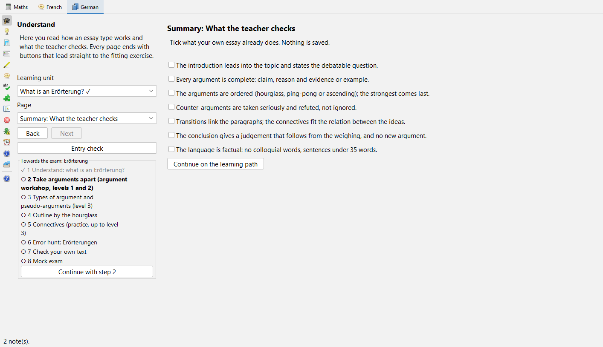
The card shows the learning path “Towards the exam: Erörterung” in eight steps, from reading the unit via the argument workshop, the outline by the hourglass, the connectives, two error hunts on Erörterungen and an own text in the checker up to the mock exam. A step is ticked when the subject sees it itself: all pages opened, a level reached by three right answers (a level that was only set does not count), an outline without findings, four of five errors found, a text of 300 words or more without a certain note, a submitted exam. Why a threshold was chosen is in the tooltip of the step. Ticked stays ticked. Continue with step n jumps into the next open step; the same list is in the Progress card.
When opened for the first time, the card offers the entry check once: five questions on pages 2 to 6. It can be skipped and opened again from the card. The result only recommends a starting point, such as “look at page 4, then step 2”; only this recommendation is saved, no answer.
The argument workshop
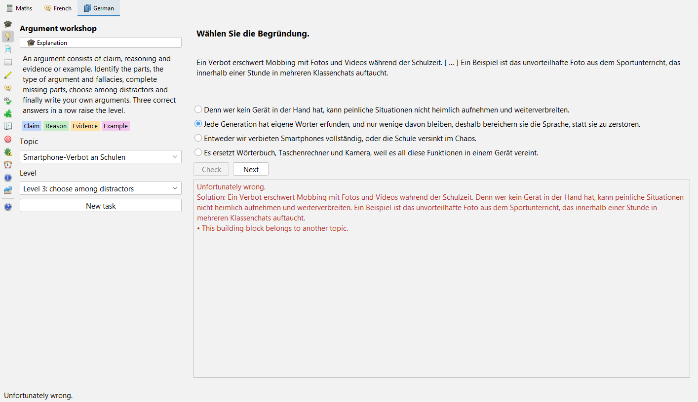
In the card choose a topic (or all) and the level; New task draws a task. The levels:
- Recognise – classify a sentence as claim, reasoning, evidence or example, determine the type of an argument or name a fallacy.
- Complete – write the missing reasoning, evidence or example oneself. The form is checked: a word of reasoning, no circular reasoning, enough length; afterwards the model is shown.
- Choose among distractors – four parts: the original, the same part of the other side, a fallacy, a part from another topic. Long answers wrap.
- Write yourself – a whole argument on topic and side, checked for all parts and by the form checker.
Check evaluates: correct, correct with notes, incomplete or wrong, with the findings below. Three correct answers in a row raise the level, two misses lower it; the status line says so. Next draws the next task.
The material workshop
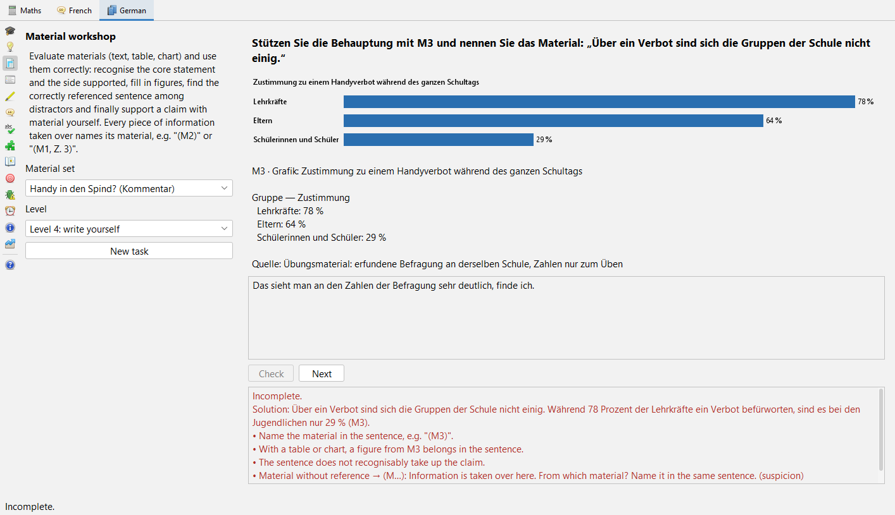
The workshop practises writing from materials: a material set consists of a task with a text type (such as commentary, letter to the editor or speech) and several materials – texts with line numbers, tables and charts. In the card one chooses a material set or all of them and the level. As in the argument workshop, difficulty rises in four levels:
- recognise: the core statement of a material and the side it supports;
- fill in: insert a figure or detail from the material into a sentence;
- choose among distractors: find the sentence that renders and references the material correctly;
- write it yourself: support a claim with the material.
Every piece of information taken over names its material, e.g. “(M2)” or “(M1, Z. 3)”. If the reference is missing, the answer is incomplete, and the feedback says which material was meant. Charts appear as bars above the form. The form checker knows the materials too: choosing a material set in its card makes it report figures and quotations without a reference and passages copied word for word.
The outline
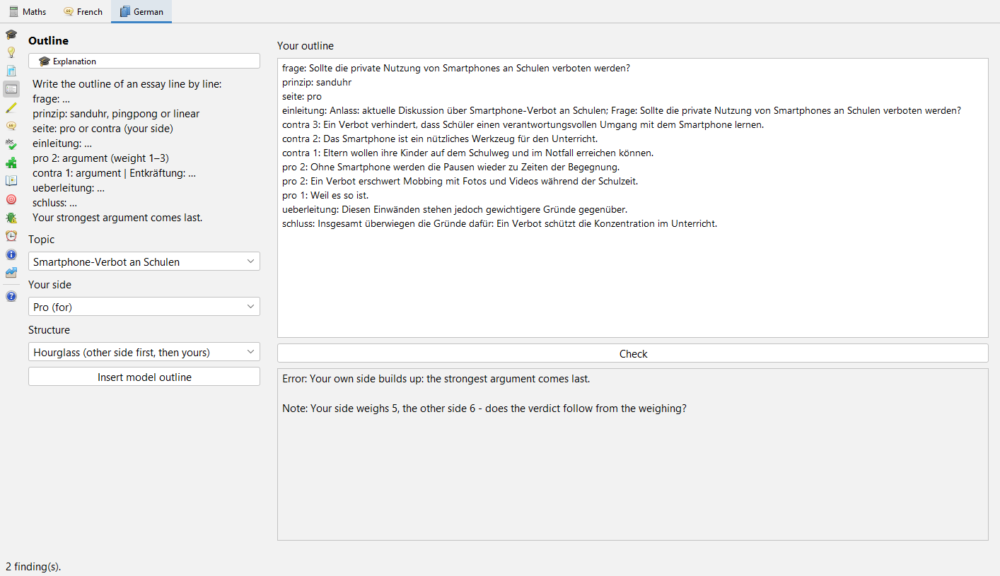
The outline is written line by line; the card explains the line types. A point starts with pro or
contra and its weight from 1 to 3, a rebuttal follows after | Entkräftung:. Check
reports errors and notes:
- Introduction and conclusion must be there, plus enough arguments (dialectical two per side, linear three).
- Hourglass: first the whole other side, then the transition, then one's own side; within a side the weights rise, the strongest argument of one's own side comes last.
- Ping-pong: every argument of the other side is rebutted, one's own side has the last word.
- Linear: only one's own side, rising.
- A note appears when the other side weighs more by the weights than the side the conclusion decides for, or when the conclusion gives no judgement.
Insert model outline inserts an outline from the material for topic, side and structure; if something is already there, the card asks first (a second click replaces).
The analysis of argumentation
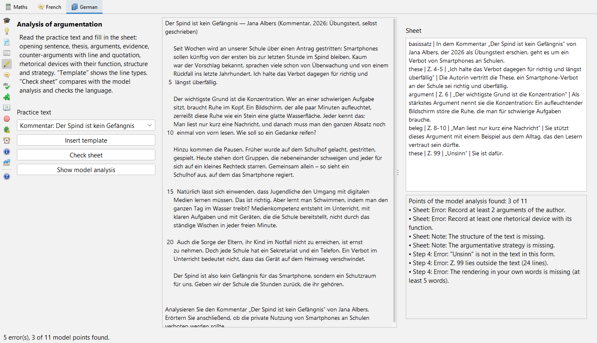
In the card choose a practice text. On the left it stands with line numbers, header and task; on the right the sheet, one entry per line:
basissatz | In dem Kommentar „…“ von …, erschienen …, geht es um … these | Z. 4-5 | „Zitat“ | Wiedergabe im Konjunktiv argument | Z. 6 | „Zitat“ | Wiedergabe mittel | Z. 8 | „Zitat“ | vergleich | Funktion: was es bewirkt aufbau | … strategie | …
There are also beleg (evidence) and gegenargument (counter-argument). Insert
template inserts the line types as comments (lines starting with # do not count). Check sheet
says per line whether the quotation is in the text, the lines are right and the paraphrase uses one's own words; for the
whole sheet, whether opening sentence, thesis, two arguments, a device with function, structure and strategy are there;
and the form checker reads the sheet as an essay (subjunctive, present tense, no first person). At the top it says how
many points of the model analysis were found. Show model analysis shows it in full. Each practice text has its
own sheet.
The form checker
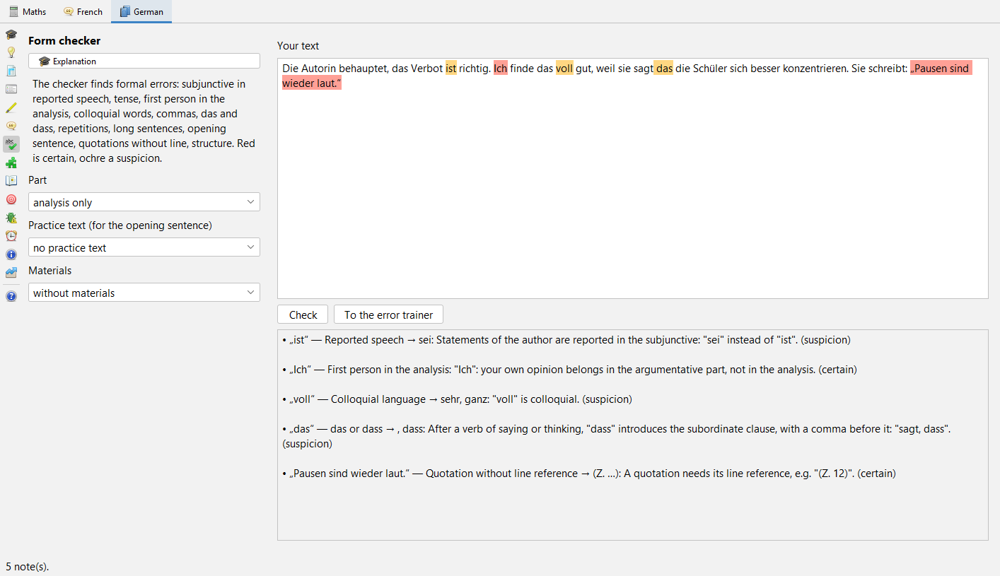
In the card set the part – whole essay, analysis only or essay only –, because the first person is allowed in
the argumentative part but not in the analysis. In the whole essay the markers [Analyse] and
[Erörterung] separate the parts. If a practice text is chosen, the checker also tests whether the
opening sentence names author, title and publication. After Check every passage is marked: red is
certain, ochre a suspicion one should look at oneself. Changing the text removes the marks. To the error
trainer creates a card for every passage reported, without duplicates.
Practice: language and communication
In the card choose the exercise. Connectives: choose the relation of a connective, fill a gap freely, fill a gap from four words or connect two statements oneself. Filled freely, any word of the same relation and kind counts (da instead of weil); one of another kind does not fit the word order (denn instead of weil). Operators: choose the level of demand of an operator, name the operator for a description or choose it among four, and write out the operators of a task.
Stylistic devices: choose the device for an example, name it from its feature, match it among distractors and, at level 4, describe the effect of a device oneself – the answer must contain a word of effect (clarifies, emphasises, directs attention …), otherwise there is a note. All devices are listed under Look up. Communication: recognise terms of the models of communication (sender and receiver, axioms, the four sides of a message), add the side of an utterance, decide between language of closeness and of distance among distractors and, at level 4, name the features of an excerpt (emojis, short words, ellipses, addressing with du or Sie, nominal style, long sentences …). A feature that does not occur in the excerpt is an error.
Each exercise has its own level; usage is the same as in the workshop.
Practise literature
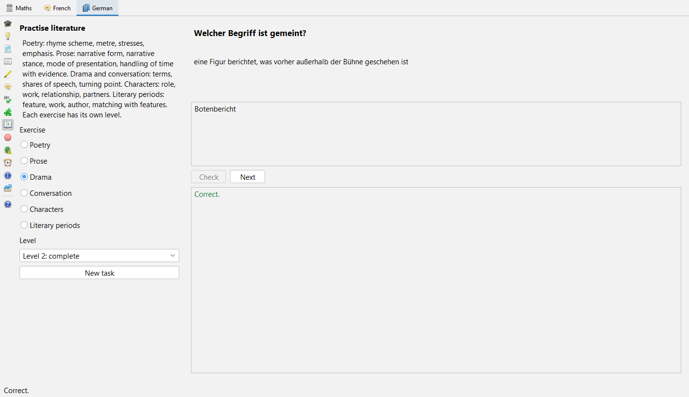
Six exercises on the supplied texts, each in four levels:
- Poetry: rhyme scheme of a stanza, metre (iamb, trochee, dactyl, anapaest), number of stresses and cadence
of a line, at level 4 the stress pattern of a line as a sequence of
x(stressed) and-(unstressed). A stress forced by the metre where the word sounds different is a wrenched accent and gives a note, not an error. - Prose: narrative form (first or third person), narrative stance (authorial, figural, neutral), mode of
presentation and, at level 4, the handling of time with a quotation as evidence:
zeitraffend | „quotation“. The quotation must be in the text. - Drama and conversation: terms (monologue, stage direction, exposition …; conversation analysis), shares of speech of the characters, choosing among distractors and, at level 4, the line of the turning point. One line off gives a note.
- Characters: role of a character, the work, the relationship to another (family, love, enmity, power, help) and, at level 4, all characters linked to it. The basis are the constellations of Michael Kohlhaas, Die Marquise von O...., Der zerbrochne Krug and the two scenes.
- Literary periods: a feature of a period, the work, the author and, at level 4, the period of a text with
two features:
Romantik | Sehnsucht, Natur als Spiegel der Seele. A feature of another period is reported.
Interpretation and comparison
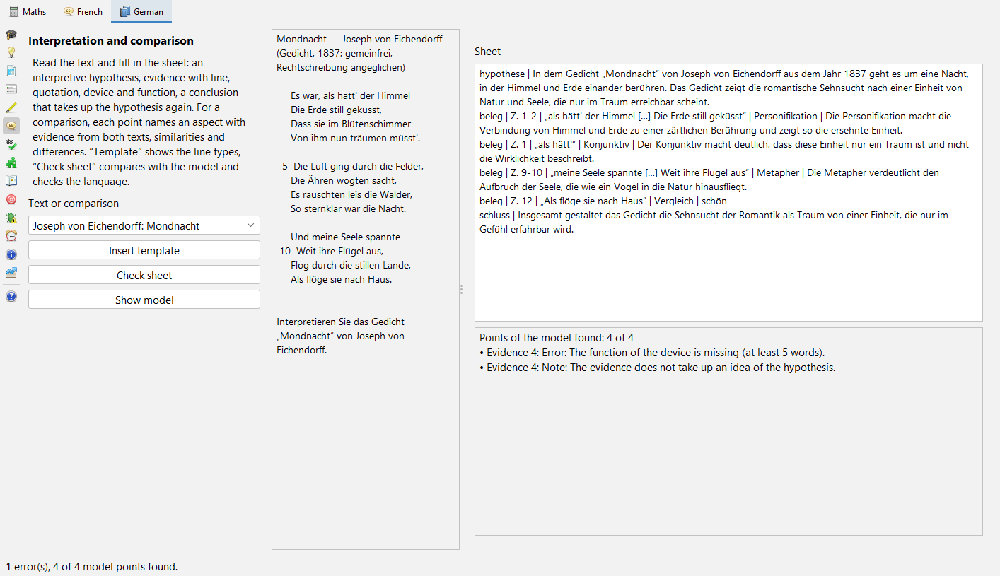
Built like the analysis of argumentation. In the card choose a poem, a narrative text, a scene or a comparison of two poems. The sheet of an interpretation:
hypothese | What the text shows and how beleg | Z. 3 | „quotation“ | Personifikation | function: what it achieves schluss | Take up the hypothesis again
The sheet of a comparison names, per point, an aspect with a piece of evidence from each text and an interpretation:
hypothese | What links and separates both texts, with both titles gemeinsam | Natur | Z. 2 | „quotation from A“ | Z. 4 | „quotation from B“ | interpretation unterschied | Sehnsucht | Z. 5 | „…“ | Z. 6 | „…“ | interpretation schluss | …
Check sheet reports: a hypothesis that only describes the content instead of interpreting it; too little evidence; a quotation that is not in the text, or a wrong line; an unknown stylistic device; a function without an effect; evidence that does not take up the hypothesis; in a comparison, missing similarities or differences and a hypothesis without both titles; a conclusion without reference. The form checker also reads the sheet as an essay (present tense, quoting). Show model shows the model interpretation or comparison as an essay. Each task has its own sheet.
The texts by Heinrich von Kleist (Michael Kohlhaas, Das Erdbeben in Chili, Die Marquise von O....) are short excerpts; check their wording against a printed edition before using them in class.
The error hunt
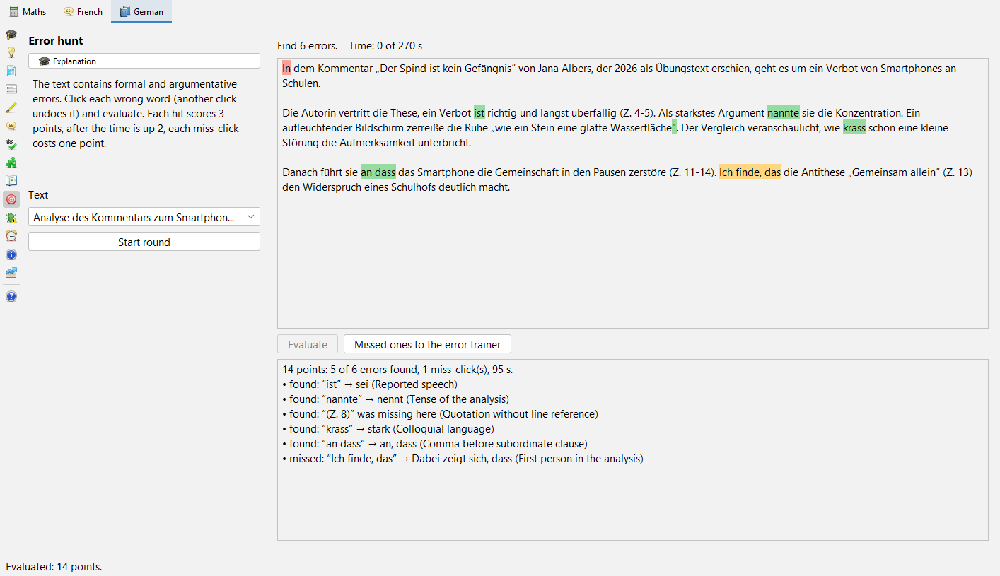
In the card choose a text and press Start round. At the top are the number of errors and the clock. A click on a word marks it, a second click removes the mark. Evaluate shows: green found, orange missed, red wrong. Each hit scores 3 points, after the target time 2, each miss-click costs one point, never below zero. If something is missing in the text (such as a line reference), the line reads “… was missing here”. Missed ones to the error trainer creates cards for the missed passages.
The error trainer
Each card is a sentence from one's own text with a gap where the error was; write the correct version into it and press Enter or Check. Filled in correctly, the card moves up one box and comes back after 1, 2, 4, 8 or 16 days; wrong, it goes back to box 1. The card shows the state of the card box per box and how many cards are due today. Delete all cards asks first in the card.
The exam
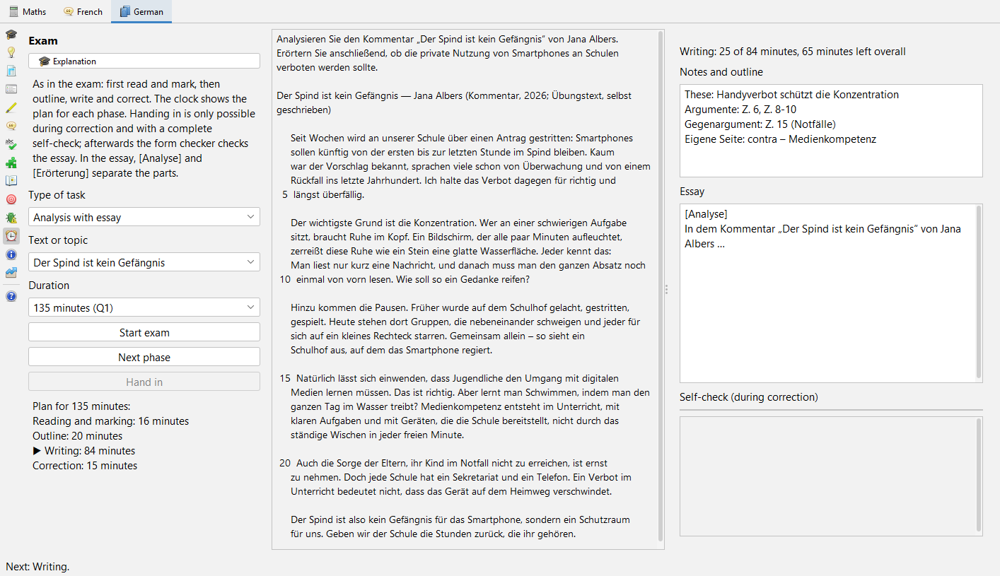
In the card choose the type of task (analysis with essay, writing from materials or free essay), the text or topic and the duration (90, 135, 180 or 255 minutes) and press Start exam. The plan divides the time into four phases – reading and marking, outline, writing, correction – and marks the current one with ▶; the clock above the notes gives the minutes of the phase and the time left. Next phase moves on; when the time is up, correction begins by itself. Handing in is only possible during correction and when all points of the self-check are ticked; afterwards the form checker checks the whole essay, and the evaluation gives the time used per phase next to the plan. A running exam stays in the work state; starting anew requires a confirmation.
For an interpretation the literary text with line numbers is on the left; the self-check asks for the introductory sentence, an interpretive hypothesis, quotations with line, present tense, devices with function, the link of form and content and an interpretive conclusion. The interpretation with essay exists for texts with an essay question (such as Michael Kohlhaas: can a violated sense of justice justify vigilante justice?); its self-check also asks for the transition and the points of the essay.
Progress
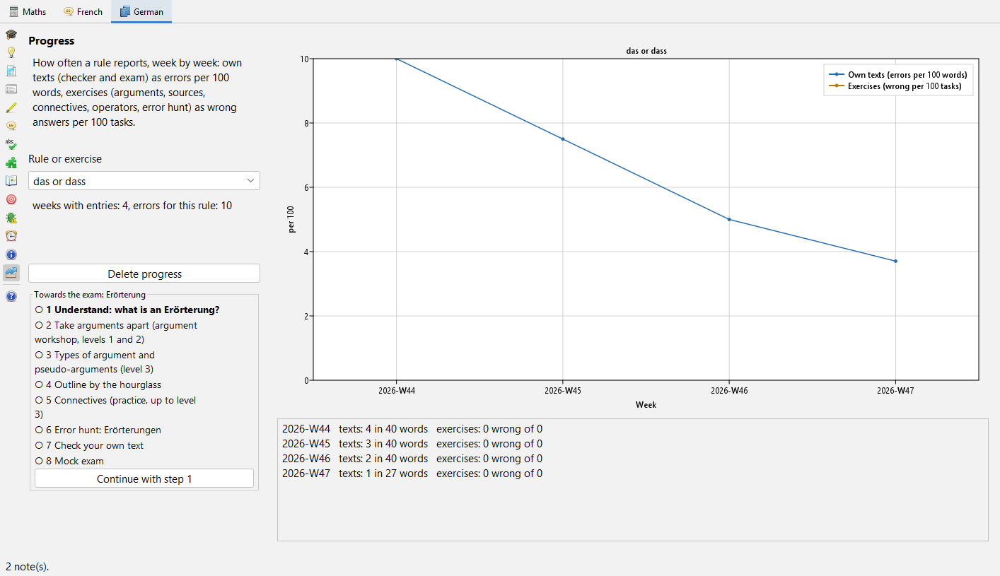
Progress counts how often a rule reports, week by week. In the card one chooses a rule of the checker or an exercise (argument workshop, material workshop, connectives, operators, stylistic devices, communication, poetry, prose, drama, conversation, characters, literary periods, errors of the error hunt without a checker rule). The chart shows two lines:
- Own texts: what the form checker and the evaluation of a handed-in exam find, as errors per 100 words;
- Exercises: answers in the workshops and errors missed in the error hunt, as wrong answers per 100 tasks. An error of the hunt counts under the checker rule it belongs to.
Below are the weeks as a table and the total for the rule. Every check counts, even one without a note – only then does a decline become visible. Delete progress asks for confirmation in the card; the work state keeps the progress and the chosen rule. The subject French has the same card.
Look up
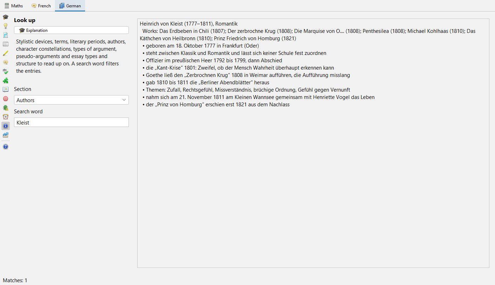
In the card choose a section – stylistic devices (feature, example, effect), terms, literary periods (time span, guiding idea, features, authors), authors (dates, period, works, facts), character constellations, types of argument, pseudo-arguments and fallacies or essay types and structure (with a reference to the detailed page in Understand) – and type a search word; the entries containing it are shown. This is for reading only, nothing is assessed.
What the work state keeps
The work state keeps which tool was open, the levels of every exercise, topic and choices of the cards, the outline, the sheet per practice text, per interpretation and per comparison, section and search word of Look up, the checker's text, the cards of the error trainer and a running exam with essay and notes, as well as page and unit of Understand, the pages read, the completed steps of the learning path and the recommendation of the entry check. Broken entries are reported in the status line and replaced by the default.